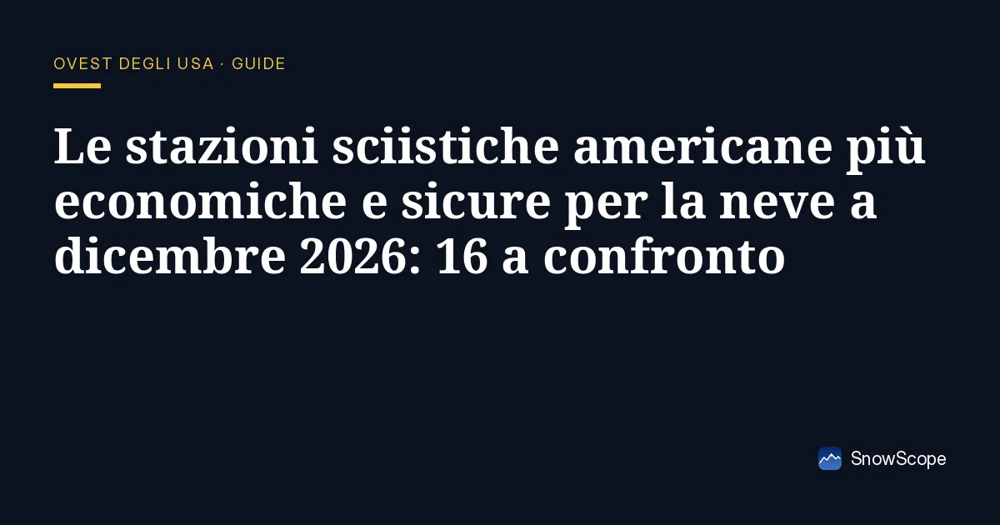

Le stazioni sciistiche americane più economiche e sicure per la neve a dicembre 2026: 16 a confronto
Economico e sicuro per la neve raramente coincidono sullo stesso skipass a dicembre. Abbiamo classificato 16 stazioni americane economiche secondo un numero onesto tratto dal nostro storico neve, la quota di inverni con almeno 20 in (50 cm) a metà montagna il 15 dicembre, confrontandola con il prezzo del giornaliero adulti sulla pagina ufficiale di ciascuna.
Le previsioni neve in tempo reale per US West nell'app SnowScopeAltezza neve, allerte powder e mappa 3D, gratis.
La classifica, dalla più sicura alla più rischiosa
In testa, Grand Targhee ha avuto 20 in o più a metà montagna il 15 dicembre nel 100 % dei nostri 46 inverni. Seguono Mt. Baker (93 %), Brighton (89 %), White Pass, Snow King e Brundage (87 % ciascuna), Lookout Pass e Schweitzer (85 %), Montana Snowbowl (83 %) e Timberline (78 %).
Nella seconda metà della classifica dicembre diventa incerto: Wolf Creek e Sunlight (72 %), Ski Cooper (70 %), Loveland (67 %), Beaver Mountain (57 %) e Bridger Bowl (50 %). I numeri sulla mappa seguono questo ordine.

Il punto d'equilibrio: abbastanza sicuro ed economico
Cinque stazioni uniscono probabilità superiori all'80 % a un prezzo verificato sotto gli 80 $. Brundage parte da appena 65 $ in alcuni giorni (87 %). White Pass parte da 69 $ online nei giorni di bassa affluenza (87 %). Lookout Pass costa 63 $ infrasettimanale con prenotazione (85 %). Brighton parte da 72 $ acquistando in anticipo (89 %). Montana Snowbowl costa 78 $ nei giorni feriali (83 %).
Tre di questi sono prezzi 'a partire da' che salgono man mano che le date si esauriscono: il trucco è quindi sempre lo stesso, scegliere un giorno feriale e prenotare presto.
Neve sicura, ma si paga
Grand Targhee e Mt. Baker sono le due scommesse di dicembre più sicure della nostra lista. Il biglietto online di Targhee va da 125 $ a 180 $ a seconda della data. Mt. Baker vende solo in loco, 98,80 $ nei giorni di bassa affluenza e 115,42 $ nei giorni di punta. Snow King, a Jackson, parte da 100 $, e il giornaliero intero di Timberline costa 129 $ in bassa affluenza, o 96 $ per un pomeriggio di bassa affluenza. Il 3-Pack di Schweitzer costa 249 $, che la stazione indica come 83 $ al giorno.
Economico, ma serve pazienza
I prezzi più bassi in assoluto si trovano dove la neve è meno certa. Ski Cooper fa pagare 49 $ nei giorni feriali. Loveland vende biglietti online a 60 $ fino al 13 dicembre, prima che il prezzo in cassa salga a 159 $. Sunlight parte da 74 $, Beaver Mountain ha un prezzo fisso di 75 $, Bridger Bowl 86 $ online e Wolf Creek 96 $ nei giorni normali.
Sono buone scelte per dicembre se le date sono flessibili: la quota di inverni con buona neve cresce ogni settimana del mese, e la maggior parte di queste stazioni è molto più sicura a Natale che il 15 dicembre.
Come leggere questi numeri
I nostri numeri sulla neve descrivono i 46 inverni passati, dal 1980-81 al 2025-26, non una previsione per questo inverno. Una metà dicembre tipica a metà montagna va da 20 in (51 cm) a Bridger Bowl a 52 in (132 cm) a Timberline e 46 in (118 cm) a Grand Targhee. I prezzi sono stati rilevati sulla pagina ufficiale di ciascuna stazione il 13 novembre 2026; i prezzi dinamici cambieranno.
Consigli per sciatori
- Prenotate nei giorni feriali: quasi tutte le stazioni di questa lista costano meno dal lunedì al giovedì o al venerdì.
- Se dovete sciare a inizio dicembre, scegliete in cima alla classifica; se potete aspettare la settimana di Natale, la fascia economica diventa molto più sicura.
- Comprate online e in anticipo dove i prezzi sono dinamici: i prezzi 'a partire da' vanno a chi acquista prima.
- Controllate la mappa della neve nella settimana prima di partire: un dicembre magro può capitare ovunque.
Riferimenti e crediti
- Grand Targhee, winter lift tickets 2026-27 (official) www.grandtarghee.com/tickets-passes/lift-tickets/winter-lift-tickets
- Mt. Baker Ski Area, daily lift tickets (official) www.mtbaker.us/tickets-and-passes/daily-lift-tickets/
- Brighton Resort, lift tickets 2026/27 (official) www.brightonresort.com/lift-tickets
- White Pass, online day tickets 2026/27 (official) skiwhitepass.com/online-day-ticket-sales
- Snow King Mountain, winter day tickets (official store) store.snowkingmountain.com/en/catalogue/category/500-winter-lift-tickets/510-day-ticket_447/
- Brundage Mountain, daily lift tickets (official) brundage.com/daily-lift-tickets/
- Lookout Pass, lift tickets 2026-2027 (official) skilookout.com/lift-tickets/
- Schweitzer, lift ticket 3-Pack 2026/2027 (official) www.schweitzer.com/plan-your-trip/deals-and-packages/lift-ticket-3pack
- Montana Snowbowl, lift tickets 2026/27 (official) montanasnowbowl.com/sbblog/lift-tickets/
- Timberline Lodge, winter lift tickets 2026/2027 (official) www.timberlinelodge.com/activities/winter/lift-tickets/
- Wolf Creek Ski Area, tickets and passes 2026-2027 (official) wolfcreekski.com/tickets-passes/
- Sunlight Mountain Resort, lift tickets (official) sunlightmtn.com/lift-tickets/
- Ski Cooper, day pass 2026-27 (official) www.skicooper.com/cooper-day-pass/
- Loveland Ski Area, lift tickets 2026-27 (official) skiloveland.com/lift-tickets/
- Beaver Mountain, tickets and passes 2026-2027 (official) www.skithebeav.com/tickets-and-passes/
- Bridger Bowl, lift ticket pricing 2026/27 (official) bridgerbowl.com/tickets-passes/lift-tickets
- OpenSkiMap (mapped lifts and runs) openskimap.org/
Su questi numeri
Numeri della neve: storico neve SnowScope, 46 inverni passati (1980-81 - 2025-26) alle quote indicate (base, metà, vetta), una ricostruzione della neve passata per un'area corretta per la quota (basata su ERA5-Land; Snow_Hydro 1 km per il Marocco), non i bollettini della località. Neve attuale: la mappa SnowScope. Impianti, piste e quote: mappatura OpenSkiMap. Prezzi: le pagine ufficiali elencate qui sotto, lette il 13 novembre 2026; i prezzi dinamici cambiano con la data e la domanda.
Cita questo articolo
Per ricerca, didattica o stampa: numeri e grafici sono liberamente riutilizzabili con licenza CC BY 4.0 citando così.
SnowScope (2026), Le stazioni sciistiche americane più economiche e sicure per la neve a dicembre 2026: 16 a confronto, https://snowscope.app/blog/it/2026/11/cheapest-snow-sure-us-ski-areas-december-2026.html, consultato il 2026-11-14
SnowScope (Atlas Labs). (2026, November 14). Le stazioni sciistiche americane più economiche e sicure per la neve a dicembre 2026: 16 a confronto. SnowScope snow reports. https://snowscope.app/blog/it/2026/11/cheapest-snow-sure-us-ski-areas-december-2026.html
BibTeX
@misc{snowscope2026cheapestsnowsureusskiare,
author = {{SnowScope (Atlas Labs)}},
title = {Le stazioni sciistiche americane più economiche e sicure per la neve a dicembre 2026: 16 a confronto},
year = {2026},
month = nov,
howpublished = {\url{https://snowscope.app/blog/it/2026/11/cheapest-snow-sure-us-ski-areas-december-2026.html}},
note = {Published 2026-11-14 14:47 UTC; accessed 2026-11-14}
}· CC BY 4.0 · Metodi, dati e strumenti →
Segui US West
Gratis: un messaggio quando arriva la neve e il meteo ogni mattina.